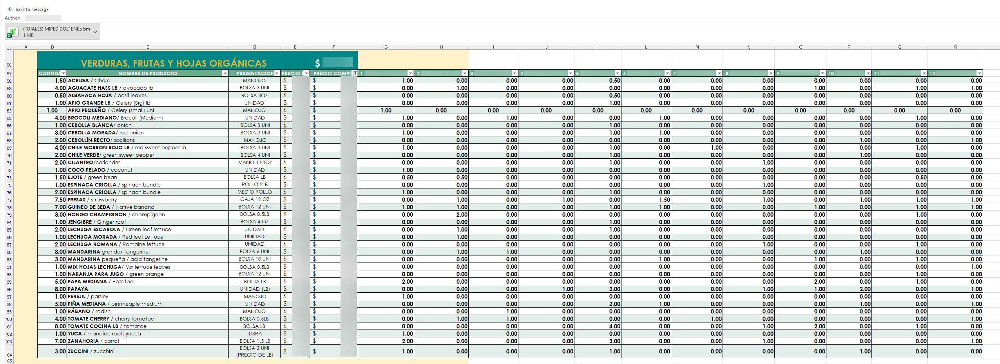

La empresa enviaba un catálogo de Excel por WhatsApp. Sus clientes lo llenaban y lo devolvían. Tres veces por semana recibían alrededor de 50 archivos que debían consolidar manualmente.
The business sent an Excel catalog through WhatsApp. Customers filled it out and returned it. Three times per week, the company received around 50 files that had to be manually consolidated.
- Antes: 3–4 horas de trabajo manual.Before: 3–4 hours of manual work.
- Con Anselmo: aproximadamente 5 minutos.With Anselmo: about 5 minutes.
- Resultado: reporte consolidado para comprar a proveedores.Output: consolidated supplier purchasing report.